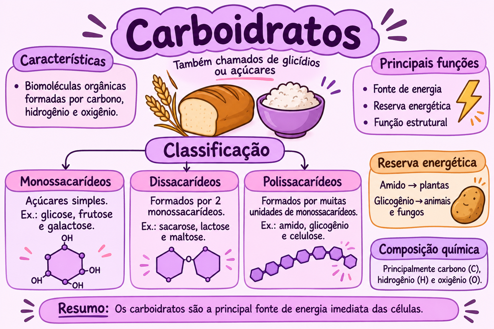

O que são carboidratos? 🤔
Carboidratos são compostos formados basicamente por carbono
(C), hidrogênio (H) e oxigênio (O). Por isso, quimicamente,
recebem o nome de hidratos de carbono, cuja fórmula geral
simplificada é Cx(H2O)y. Tratam-se de abundantes biomoléculas
na natureza, também chamadas de glicídios ou açúcares, que
compreendem desde o açúcar que utilizamos para adoçar até
a celulose presente nas células vegetais.
Eles são biomoléculas compostas principalmente por carbono,
hidrogênio e oxigênio.

Quais os principais tipos de carboidratos?
Existem três tipos principais de carboidratos: monossacarídeos, dissacarídeos e polissacarídeos. Conheça cada um logo abaixo.
Monossacarídeos
São carboidratos constituídos por aldoses, que possuem
o grupo aldeído (-CHO) na cadeia, e cetoses, que possuem
o grupo funcional cetona (C=O).
De acordo com o número de carbonos, os monossacarídeos
são classificados em trioses (3C), tetroses (4C),
pentoses (5C), hexoses (6C) e heptoses (7C).
Dissacarídeos
Os dissacarídeos são carboidratos formados pela combinação
de dois monossacarídeos através de uma ligação glicosídica.
Estes compostos orgânicos são formados por carbono,
hidrogênio e oxigênio. Suas principais características
são o sabor doce e a solubilidade em água e, por isso,
são muito utilizados como adoçantes.
Polissacarídeos
Polissacarídeos são grandes polímeros naturais formados
por cadeias de monossacarídeos ligados entre si por
ligações glicosídicas, que são ligações covalentes
resultantes da união entre esses monossacarídeos.
Insolúveis em água, os polissacarídeos são carboidratos,
também conhecidos como glicanos. Através da hidrólise
da biomolécula, um grande número de açúcares menores
é liberado.